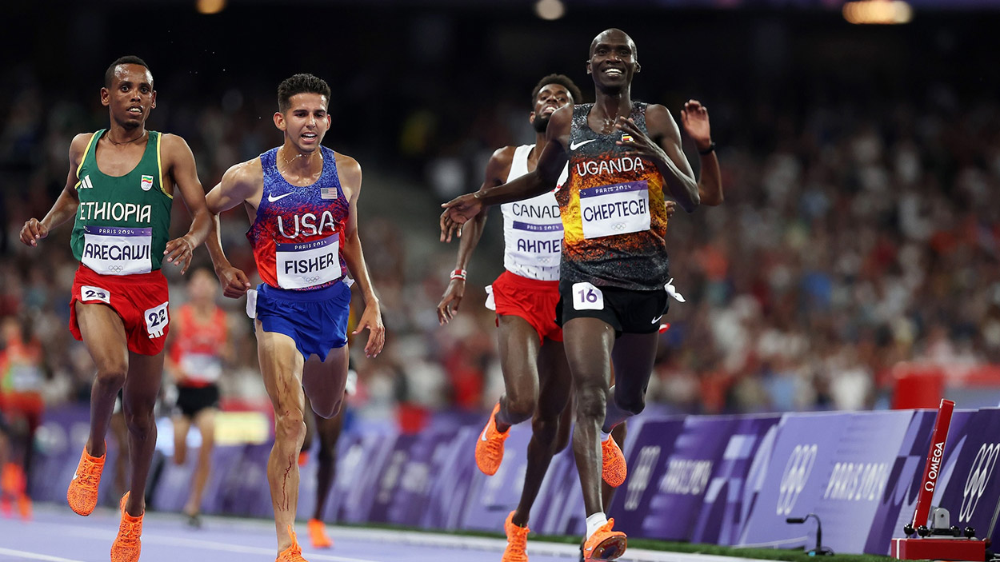

10000 mètres - Paris Athletic 2026
Le 10 000 mètres, c’est l’épopée sauvage de la piste. C'est l'épreuve de vérité, 25 tours de stade où l'on ne peut plus rien cacher.

Description de l'épreuve
À 22 km/h de moyenne, le peloton forme une entité vivante, compacte et mouvante. Les coureurs se frôlent, s'appuient parfois les uns sur les autres. C'est une chorégraphie brutale où la moindre erreur de placement à 5 tours de l'arrivée se paie cash.
Imaginez un film de suspense qui dure 27 minutes. On voit les visages se transformer, les foulées s'alourdir et les regards se durcir. C'est une immersion totale dans la psychologie de l'effort extrême.
Le plus incroyable reste le dernier tour. Après 9 600 mètres de course, les meilleurs sont capables de boucler leurs dernières 400 unités en moins de 53 secondes. C'est un changement de dimension qui semble défier les lois de la biologie.
Règles de la compétition
25 tours de piste : Les athlètes parcourent exactement 10 km sur une piste de 400 m.
Comme pour le 5 000 m, il n'y a pas de couloirs. Le départ se fait sur une ligne courbe. Si le nombre de participants est élevé (plus de 30), on peut diviser le peloton en deux groupes au départ pour éviter les chutes, avant qu'ils ne se rejoignent après 100 mètres.
Dans une course de 25 tours, les meilleurs finissent souvent par rattraper les coureurs plus lents (on dit qu'ils leur prennent un tour).
Un athlète doublé doit s'écarter vers l'extérieur pour laisser passer les leaders sans les gêner. Il n'a pas le droit de profiter de l'aspiration du leader qui vient de le dépasser pour essayer de se relancer.
Un officiel agite une cloche au passage sur la ligne d'arrivée lorsqu'il ne reste plus qu'un seul tour (400 m) à parcourir. C'est l'instant où la course bascule généralement dans un sprint furieux.
Un coureur peut dépasser par la droite ou par la gauche, mais il doit s'assurer de ne pas "rabattre" trop tôt devant l'adversaire (ce qu'on appelle "couper la foulée").
Un athlète qui bouge ou part avant le coup de pistolet est immédiatement exclu de la course.
Calendrier de l'épreuve
| Phase | Date | Horaire | Catégorie |
|---|---|---|---|
| Finale | Lundi 13/07 | 12:30 | Femmes |
| Finale | Lundi 13/07 | 14:30 | Hommes |
Records
| Record | Athlète | Hauteur | Année |
|---|---|---|---|
| Record du monde (Hommes) | Joshua Cheptegei (UGA) | 26 minute et 11,00 secondes | 2020 |
| Record du monde (Femmes) | Beatrice Chebet (KEN) | 28 minute et 54,14 secondes | 2024 |